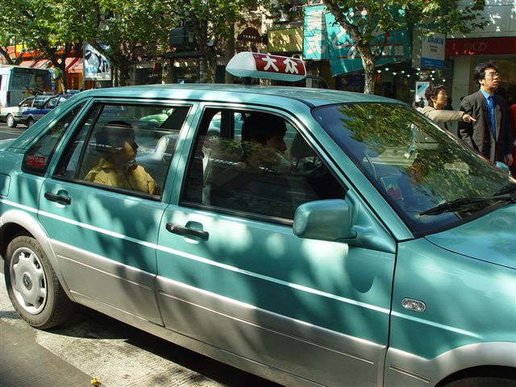
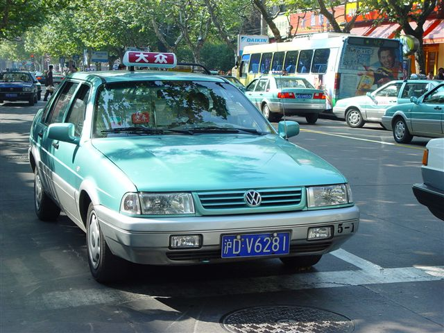
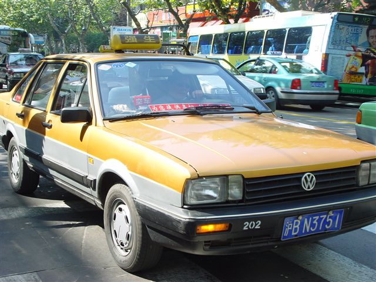

About me
Hobbies
Family
Office
Photography
Presentations
Vanke Waltz
New House
About this site
Search
Sitemap
Building website
Links
FAQs
Trips
Shanghai
Changsha
Daocheng
Hainan
Hangzhou
Nanjing
Pudong Airport
Seattle
Singapore
Xi'an
Blog
Cached blog
Daocheng
Misc
My Life
Shanghai
SARS
Travel
Website
Contact
Contact me
Email me

Taking taxis in Shanghai
See also: Shanghai home | Taxi | Business | Local Time | Travel to Nanjing | My Favorite Restaurants, Taxi
After being in Shanghai for 7 years and became a frequent taxi taker, I list the taxi companies in Shanghai in the following orders:
Services quality in order
- Turquoise taxi ( Da Zhong) (see picture)
- Yellow taxi (Qiangsheng)
- Light Green Taxi (Bashi)
- White Taxi (Jinjiang)
- Blue taxi and Red Taxi (Other)
The reasons for the ranking
Turquoise taxi (
Da Zhong)
[*] The largest taxi company in Shanghai. The drivers are very professional and
all the cars are new and in good condition. Highly recommended. Whenever there
is Da Zhong taxi, I would not take taxi from any other companies.
Yellow taxi
[*] The Chinese name for this taxi is Qiang Sheng Taxi. It is not bad, although
comparied to Da Zhong, the car may be not as good. But the service they provide
is also professional.
Light Green Taxi
[*] Not sure
White Taxi
[*] Also known as Jin Jiang Taxi in Chinese. The service is average. The
advantages of this company is, the driver are more familiar with the roads and
the city than drivers from any other companies.
For example, with the explosion of taxi numbers for Dazhong, the new drivers
cannot find the way you want to go, especially when you cannot speak Chinese.
Blue taxi and Red
Taxi
[*] Small taxi companies that they don't have an identificate color. Avoid
taking these taxis.
Background story - Why lot of taxi in Shanghai are red?
Do you know why they
are all red? 10 years ago, there is no standard color for taxis. At that time,
Da Zhong taxi changed their ID color from many to one color - red. It is very
effetive at that time. People knows the color and would like to take red taxis.
But things changes rapidly, all the taxis begin to draw themself as red since Da
Zhong cannot prevent other company to draw their taxi red. About 4 years ago
(not sure though), Da Zhong decided to use only one model of car from Volxwagen.
They also reserve the right to use Turquoise. So now, if it is a Volxwagen
Santana, and the color is Turquoise, it will be a Da Zhong taxi. No one can buy
Turquoise Santana any more.
Enjoy your stay in Shanghai!
Note: This is only my personal opinion and may not be correct.
Taxi Photos

Clean and beautiful Dazhong Taxi.

Daozhong Taxi in Huaihai Road.

Qiangsheng Taxi.